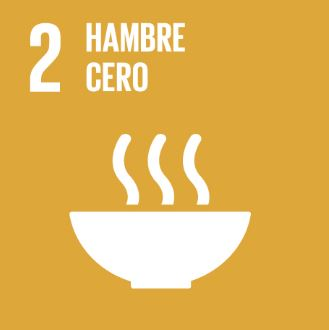

HAMBRE CERO
El sector alimentario y el sector agrícola ofrecen soluciones claves para el desarrollo y son vitales para la eliminación del hambre y la pobreza. > Más información


El sector alimentario y el sector agrícola ofrecen soluciones claves para el desarrollo y son vitales para la eliminación del hambre y la pobreza. > Más información
Se necesitan muchas iniciativas para erradicar por completo una amplia gama de enfermedades y para hacer frente a numerosas y emergentes relativas a la salud. > Más información
Se han producido importantes avances con relación a la mejora de su acceso a todos los niveles, sobre todo, en el caso de las mujeres y las niñas. > Más información
ELa igualdad entre los géneros no es solo un derecho humano fundamental, sino la base necesaria para conseguir un mundo pacífico, próspero y sostenible. > Más información
El reparto del agua no es el adecuado y para el año 2050 se espera que al menos un 25% de la población mundial viva en un país afectado por escasez crónica y reiterada de agua dulce. > Más información
La energía es central para casi todos los grandes desafíos y oportunidades a los que hace frente el mundo actualmente. > Más información
La mitad de la población mundial todavía vive con el equivalente a unos $2 de los EE. UU. diarios, y el hecho de tener un empleo no garantiza la capacidad para escapar de la pobreza. > Más información

Para conseguir una economía robusta se necesitan inversiones en infraestructura como transporte, energía, comunicaciones, fundamentales para lograr un desarrollo sostenible. > Más información

Se ha recomendado la aplicación de políticas universales que presten también especial atención a las necesidades de las poblaciones desfavorecidas y marginadas. > Más información

Las ciudades son hervideros de ideas, comercio, cultura, ciencia, productividad. En el mejor de los casos, las ciudades han permitido a las personas progresar social y económicamente. > Más información

Fomentar el uso eficiente de los recursos y la energía, la construcción de infraestructuras que no dañen el medio ambiente, la mejora del acceso a los servicios básicos. > Más información

El cambio climático afecta a todos los países en todos los continentes. Tiene un impacto negativo en la economía y la vida de las personas, las comunidades y los países. > Más información

Los océanos del mundo – su temperatura, química, corrientes y vida mueven sistemas que hacen que la Tierra sea habitable para la humanidad. > Más información

El 30% de la superficie terrestre está cubierta por bosques y estos, además de proporcionar seguridad alimentaria y refugio, son fundamentales para combatir el cambio climático. > Más información

Acceso universal a la justicia y la construcción de instituciones responsables y eficaces a todos los niveles. Para ello, es necesario acabar con la corrupción existente en el poder judicial. > Más información

Para que una agenda de desarrollo sostenible sea eficaz se necesitan alianzas entre los gobiernos, el sector privado y la sociedad civil. > Más información